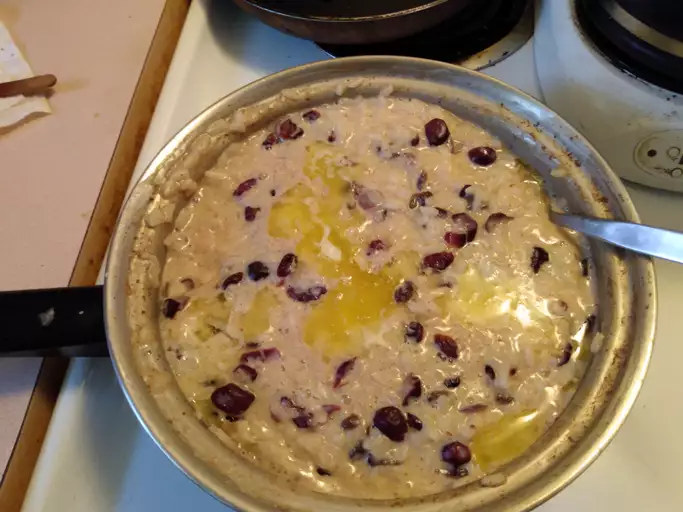

Creamy Rice Pudding

Description
This is my mom's recipe for Rice Pudding. It's the best I've ever tasted and it gets rave reviews from everyone I serve it to. Sprinkle with nutmeg or cinnamon, if desired.
For creamier pudding, use short or medium grain rice.
Ingredients
- ¾ cup uncooked white rice
- 2 cups milk, divided
- ⅓ cup white sugar
- ¼ teaspoon salt
- 1 egg, beaten
- ⅔ cup golden raisins
- 1 tablespoon butter
- ½ teaspoon vanilla extract
Steps
- Bring 1 1/2 cups water to a boil in a saucepan; stir rice into boiling water. Reduce heat to low, cover, and simmer for 20 minutes.
- In a clean saucepan, combine 1 1/2 cups cooked rice, 1 1/2 cups milk, sugar and salt. Cook over medium heat until thick and creamy, 15 to 20 minutes. Stir in remaining 1/2 cup milk, beaten egg, and raisins; cook 2 minutes more, stirring constantly. Remove from heat and stir in butter and vanilla.